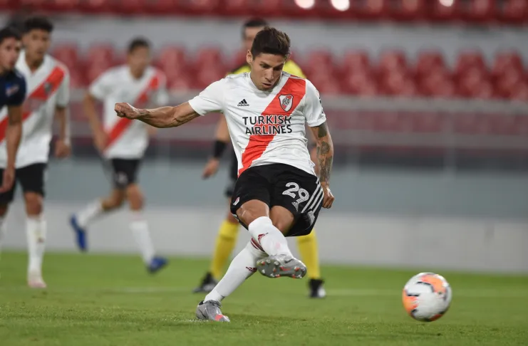
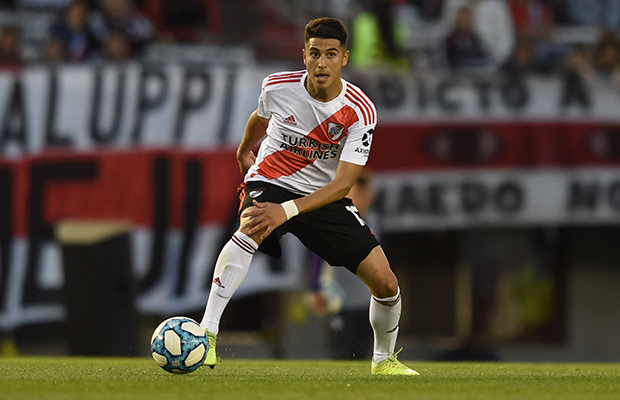
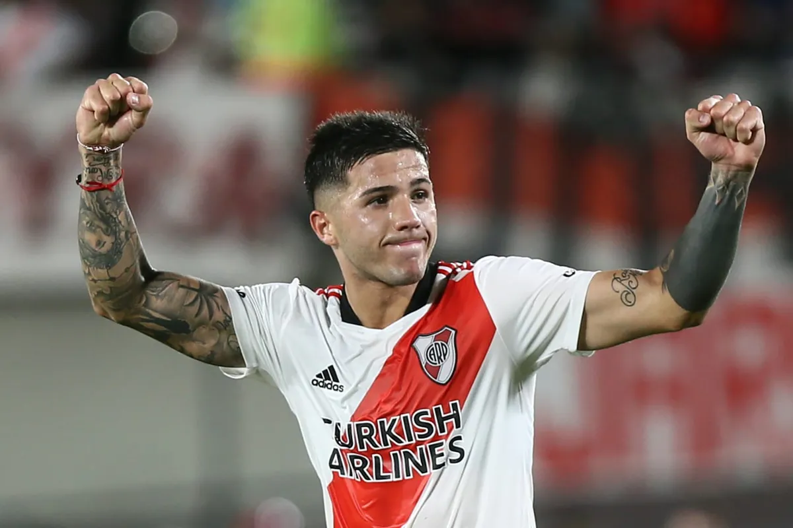
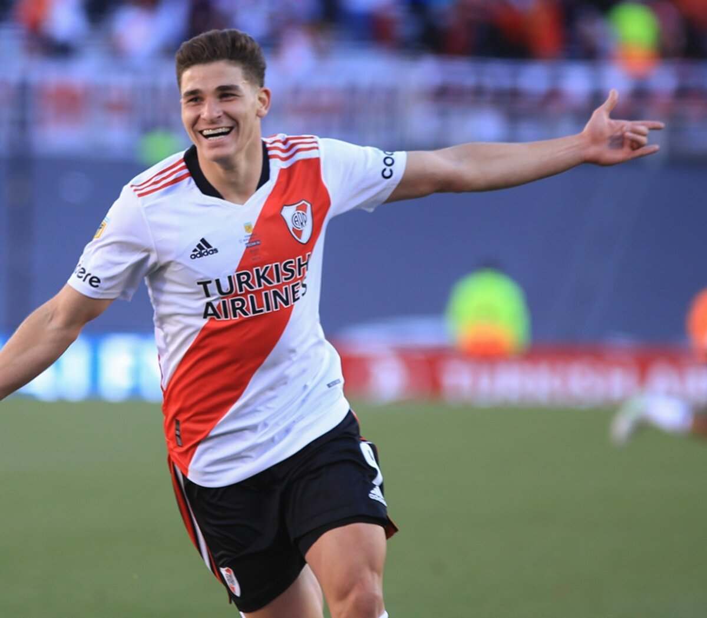
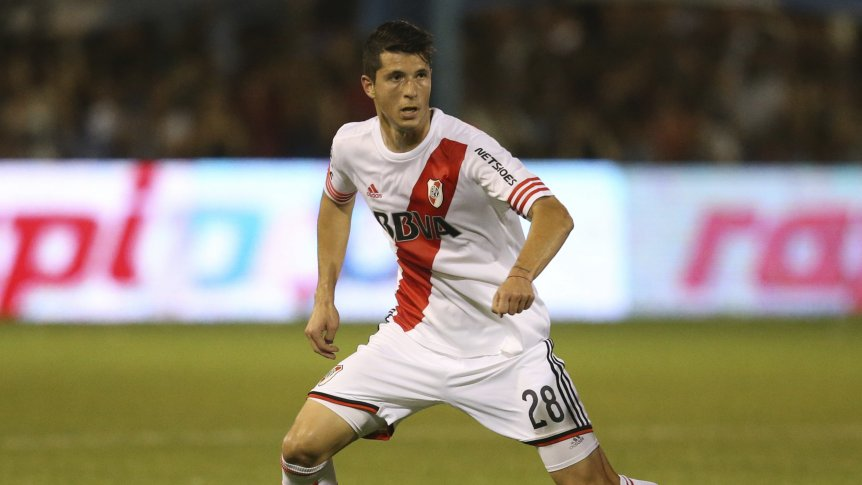
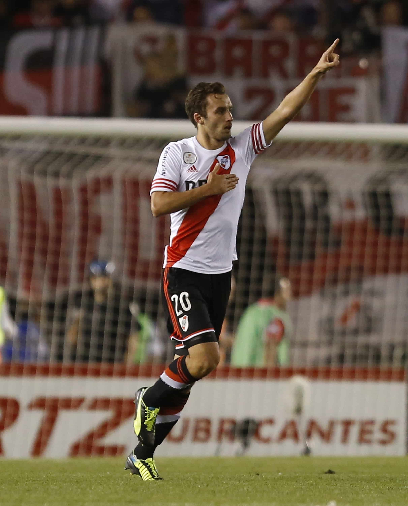

Ex River - Campeones del Mundo
Gonzalo Montiel: El actual defensor del Sevilla de España, fue un punto algo de la selección durante el Mundial y fue quien definió la serie de penales frente a Francia.
Exequiel Palacios: El actual volante del Bayern Leverkusen, fue el único jugador de la Bundesliga en ser convocado a la Selección Mayor. Por otro lado, sumo minutos frente a Australia en los octavos de final de la Copa del Mundo.
Enzo Fernandez: Criado en el semillero de River y con un puñados de partido en Europa, más precisamente en el Benfica de Portugal, se ganó la titularidad y fue la gran figura y sorpresa del Mundial junto a Lionel Messi.
Julián Alvarez: Goleador del último torneo que disputó con River. Actualmente en Manchester City y goleador del Mundial junto a Messi. La "Araña" es parte del presente de la selección y del futuro. Así como tambien lo será en Inglaterra.
Guido Rodriguez: Uno de los mediocampistas defensivos que eligío Lionel Scaloni fue el ex River. Tuvo su oportunidad en la fase de grupos pero no tuvo un gran desempeño. Actualmente juega en el Betis de España.
German Pezzella: Jugador del Betis de España, elegido por Lionel Scaloni y zaguero central del River de Gallardo campeón 2014-2015. Fue uno de los convocados al Mundial de Qatar y pese a un error que Argentina pago caro frente a Holanda, el defensa brilló cuando le toco jugar.
